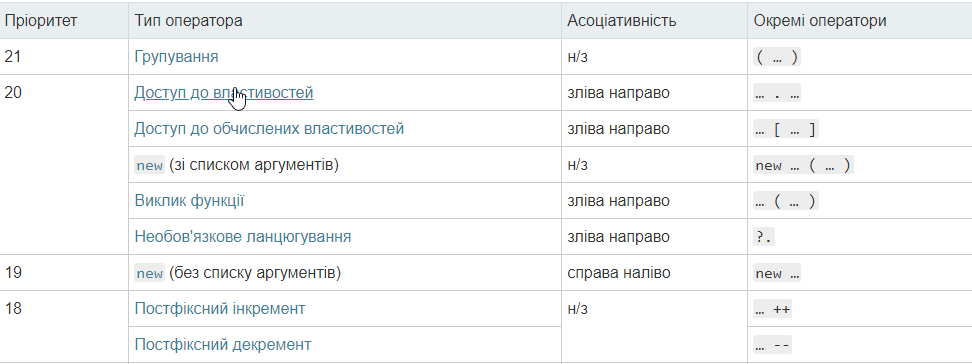
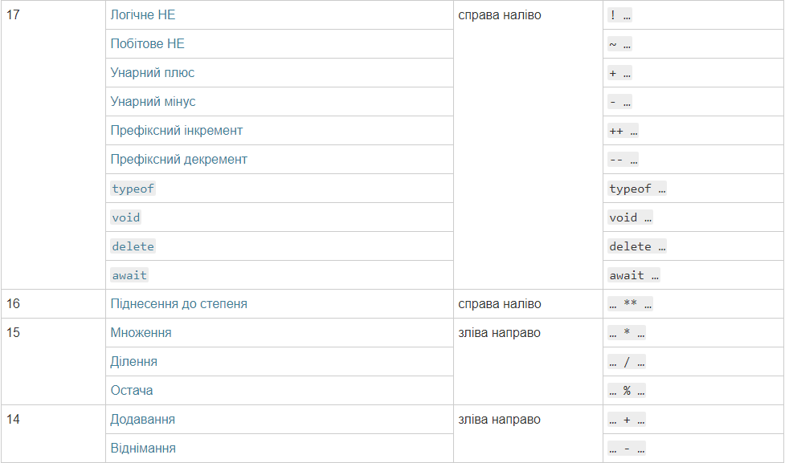
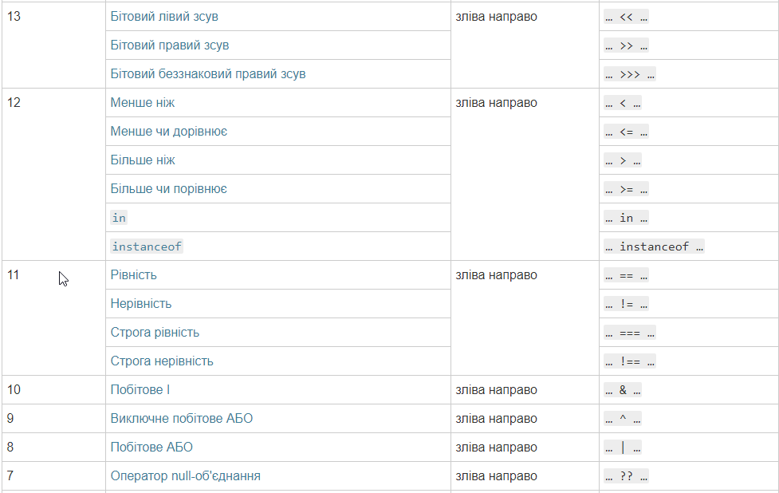
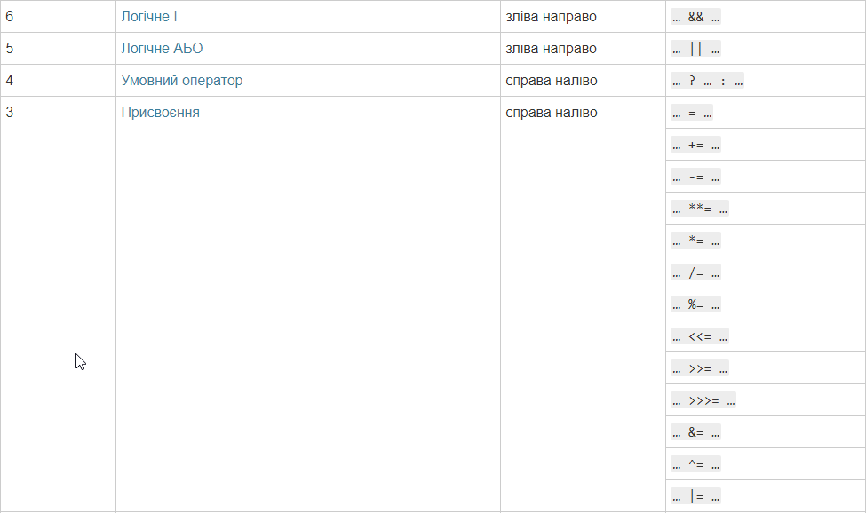
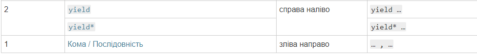
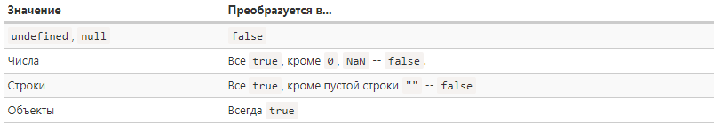

В чём отличие конкатенации от сложения?
Конкатенация – это процесс соединения вещей друг с другом. В JavaScript конкатенация чаще всего используется для соединения значений переменных друг с другом, или строк со строками (для образования более длинных строк).
let welcome = 'Good';
let time = 'evening'
alert(welcome + time);
Результат:
Good evening
Сложение (+) - возвращает сумму числовых операндов
let a = 5;
let b = 3;
let с = a + b;
alert(c)
Результат:
8
Опишите три основных правила именования переменных.
-
Правило 1
-
Имена переменных должны отражать смысл хранимого в них значения.
Никакого транслита. Только английский.
-
Правило 2
-
Имена не должны совпадать (с точностью до регистра)
или быть очень похожими на ключевые и зарезервированные
слова, на стандартные объекты и функции, а также
на имена других переменных.
-
Правило 3
-
Если имя переменной состоит из нескольких слов,
то следует придерживаться единых правил их выделения.
Для имен стандартных функций и объектов
в Javascript применяется стиль «lowerCamelCase»,
согласно которому слова пишутся подряд, первое
слово со строчной (маленькой) буквы, остальные —
с прописной (большой).
В чем отличие == от ===?
Нестрогие операции сравнения имеют запись «==»
(проверка на равенство) или «!=» (проверка на неравенство).
Тот факт, что операции являются нестрогими, проявляется
в предварительном преобразовании операндов
к примитивным типам (насколько это возможно) и последующим
сравнении. Так, например, проверку пройдут сравнения
«3=='3'» (число 3 сравнивается со строкой '3'),
«1==true» (число 1 сравнивается со значением типа
Boolean), «' '==false» (строка с пробелом сравнивается со
значением типа Boolean).
Во всех этих случаях равны между собой значения,
которые получаются после преобразования операндов
к числовой форме.
Строгие операции равенство проверяют при помощи
выражения «===», а неравенство — «!==». В этом случае
операнды разного типа в любом случае не могут быть
равными между собой, даже если содержат подобные
значения.
Объясните причины использования методов parseInt(), parseFloat(), Number()
В двух словах:
parseFloat и parseInt преобразуют в число максимальную соответствующую подстроку, с начала строки, отбросив предварительно пробельные символы.
Number - целую строку, так же отбросив предварительно пробельные символы.
//--------------------------//
console.log(parseFloat('3a'));
console.log(parseInt('3a'));
console.log(Number('3a'));
Результат:

Для более полного понимания различий можно обратиться к спецификации
Если данная функция вызывается без new, то
- Если не передали параметров результат будет +0
- Если параметр (value) передан, то будет возвращен результат вызова ToNumber(value)
Где ToNumber(value) - это абстрактная функция, вызываемая, когда необходимо получить числовое значение.
Отличительной особенностью данной функции является возможность передать вторым параметром основание системы счисления, в которой находится число в строке. По умолчанию данный параметр имеет значение: 10.
Стоит отметить, что первый аргумент всегда приводится к строке.
Алгоритм работы данной функции весьма прост:
- Отбрасываются пробельные символы с начала строки
- Определяется знак числа
- Выставляет флаг нужно ли отбрасывать префикс, в том случае, если основание равно 16 или не передано.
-
Если нужно отбрасывать префикс:
- отбрасываются первые два символа, если они равны 0x или 0X
- основанию устанавливается значение 16
- Если в строке присутствуют символы не соответствующие основанию, то выбирается подстрока, перед первым таким символом.
- Вычисляется математическое целочисленное значение, соответствующее выбранной подстроке. Символы A-Z и a-z используются для представления значений от 10 до 35 в соответствующих системах счисления.
- полученный результат умножается на знак и возвращается.
Как можно заметить, в отличие от описанной выше функции Number, для разбора используется не вся строка, распознается только префикс для шестнадцатеричных чисел, но при этом добавляется возможность указать основание системы счисления от 2 до 36
Как и в parseInt, в данной функции всегда идет приведение аргумента к строке.
Алгоритм схож с работой функции parseInt
- Отбрасываются пробельные символы с начала строки
- Определяется удовлетворяет ли оставшаяся строка или любой из ее префиксов синтаксису StrDecimalLiteral
- если нет, возвращается NaN
- если да - берется максимальный префикс.
- Возвращается соответствующее число.
Как можно заметить, по сравнению с Number, для разбора используется часть строки, не допустимы никакие префиксы вроде 0x, 0b, 0o. В отличие от parseInt допустима e-нотация
Зачем использовать битовые операции?
Благодаря реализации в арифметическом логическом устройстве (АЛУ) процессора многие регистровые битовые операции аппаратно доступны в языках низкого уровня. В большинстве процессоров реализованы в качестве инструкции регистровый НЕ; регистровые двухаргументные И, ИЛИ, исключающее ИЛИ, три типа битовых сдвигов, а также циклические битовые сдвиги.
Регистровая операция И используется для:
- проверки бита на 0 или 1
- установки 0 в указанный бит (сброса бита)
Регистровая операция ИЛИ используется для:
- установки 1 в указанный бит
Регистровая операция исключающее ИЛИ используется для инвертирования битов регистра по маске.
Сдвиг влево/вправо используется для умножения/целочисленного деления на 2 и выделения отдельных битов.
Таблица приоритетов математических операторов





Как использовать методы String, Number, Boolean?
Конструкторы String/Number/Boolean предназначены только для внутреннего пользования.
Строковое преобразование
Строковое преобразование происходит, когда требуется представление чего-либо в виде строки. Например, его производит функция alert.
var a = true;
alert( a ); // "true"
Численное преобразование
Численное преобразование происходит в математических функциях и выражениях, а также при сравнении данных различных типов (кроме сравнений ===, !==).
Для преобразования к числу в явном виде можно вызвать Number(let), либо, что короче, поставить перед выражением унарный плюс "+":
var a = +"123"; // 123
var a = Number("123"); // 123, тот же эффект
Логическое преобразование
Преобразование к true/false происходит в логическом контексте, таком как if(value), и при применении логических операторов.
Все значения, которые интуитивно «пусты», становятся false. Их несколько: 0, пустая строка, null, undefined и NaN.
Остальное, в том числе и любые объекты – true.
Полная таблица преобразований:
